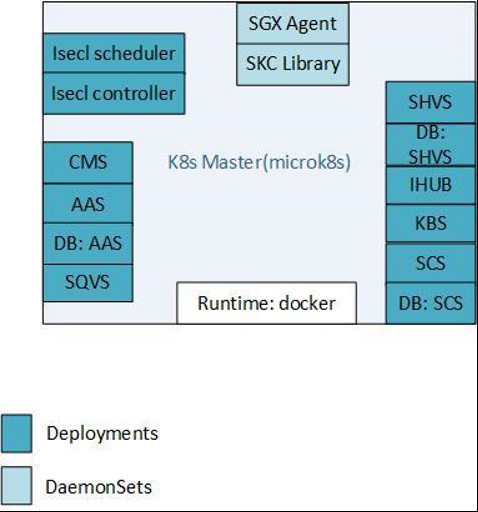
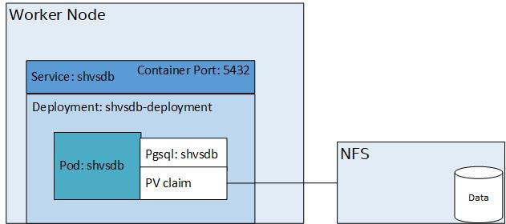
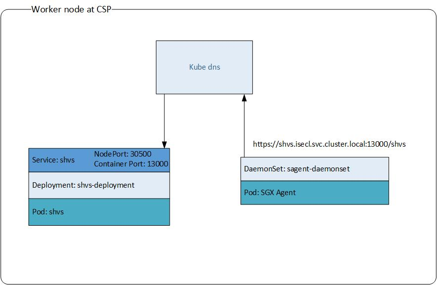

Intel® Security Libraries Installation
Building from Source
Intel® Security Libraries is distributed as open source code and must be compiled into installation binaries before installation.
Instructions and sample scripts for building the Intel® SecL-DC components can be found here. (Section 1 to 6)
After the components have been built, the installation binaries and database scripts can be found in the binaries directory created by the build scripts.
Generated component binaries/installers are:
- CMS: cms-v4.0.0.bin
- AAS: authservice-v4.0.0.bin
- SCS: scs-v4.0.0.bin
- SHVS: shvs-v4.0.0.bin
- IHUB: ihub-v4.0.0.bin
- SQVS: sqvs-v4.0.0.bin
- KBS: kbs-v4.0.0.bin
- K8S-Extensions: isecl-k8s-extensions-v4.0.0.tar.gz
- SGX-Agent: agent_untar.sh, sgx_agent.sha2 and sgx_agent.tar
- SKC-Library: skclib_untar.sh, skc_library.sha2 and skc_library.tar
DB scripts:
- Postgres installation script: install_pgdb.sh
- AAS, SCS and SHVS DB creation script: create_db.sh
Building from Source - OCI images & K8s Manifests
Intel® Security Libraries is distributed as open source code and must be compiled into OCI images before installation.
Instructions and sample scripts for building the Intel® SecL-DC components as containerized images for Kubernetes deployments can be found in Quick Start guide.
After the components have been built, the OCI images and pre-req scripts can be found in the K8s directory created by the build scripts.
Generated components OCI images under <working directory>/k8s/container-images:
- Authentication Authorization Service:
aas-v4.0.0.tar - Certificate Management Service:
cms-v4.0.0.tar - Integration Hub:
ihub-v4.0.0.tar - Key Broker Service:
kbs-v4.0.0.tar - K8s Extensions Custom Controller:
isecl-k8s-controller-v4.0.0.tar - K8s Extensions Extended Scheduler:
isecl-k8s-scheduler-v4.0.0.tar - SGX Caching Service:
scs-v4.0.0.tar - SGX Quote Verification Service:
sqvs-v4.0.0.tar - SGX Host Verification Service:
shvs-v4.0.0.tar - SGX Agent:
sgx-agent-v4.0.0.tar - SKC Library:
skc-lib-4.0.0.tar
Generated Components K8s Manifests directories under <working directory>/k8s/manifests:
- Authentication Authorization Service Database:
aas-db - SGX Caching Service Database:
scs-db - SGX Host Verification Service Database:
shvs-db - Certificate Management Service:
cms - Authentication Authorization Service:
aas - Integration Hub:
ihub - Key Broker Service:
kbs - SGX Caching Service:
scs - SGX Host Verification Service:
shvs - SGX Quote Verification Service:
sqvs - K8s Extensions Custom Controller:
k8s-extensions-controller - K8s Extensions Extended Scheduler:
k8s-extensions-scheduler - SGX Agent:
sgx_agent - SKC Library:
skc_library
Bootstrap scripts and answer file under <working directory>/k8s/manifests:
- Pre-req:
pre-requisites.sh - Bootstrap DB:
skc-bootstrap-db-services.sh - Answer file:
isecl-skc-k8s.env - Bootstrap:
skc-bootstrap.sh
Hardware Considerations
Supported Hardware
- Intel® Xeon® SP products those support SGX
BIOS Requirements
-
Intel® SGX-TEM BIOS requirements are outlined in the latest Intel® SGX Platforms BIOS Writer's Guide
-
Intel® SGX should be enabled in BIOS menu (Intel® SGX is Disabled by default on Ice Lake).
-
Intel® SGX BIOS requirements include exposing Flexible Launch Control menu.
OS Requirements (Intel® SGX does not supported on 32-bit OS):
-
Linux: RHEL 8.2
-
Linux: Ubuntu 18.04
Requirements for Containerized Deployment with K8s
Operating System:
- RHEL 8.2
- Ubuntu 18.04
Kubernetes
- Single-node:
microk8s(1.17.17) - Multi-node:
kubeadm(1.17.17)
Container Runtime
- Docker 19.03.13 on RHEL 8.2
- Docker 19.03.5 on Ubuntu 18.04
Storage:
hostPathfor Single Nodemicrok8sfor all services and agentsNFSfor Multi Nodekubeadmfor all services,hostPathfor sgx_agent and skc_library
Recommended Service Layout
The Intel® SecL-DC services can be installed in a variety of layouts, partially depending on the use cases desired and the OS of the server(s) to be protected. In general, the Intel® SecL-DC applications can be divided into management services that are deployed on the network on the management plane, and host or node components that must be installed on each protected server.
Management services can typically be deployed anywhere with network access to all the protected servers. This could be a set of individual VMs per service; containers; or all installed on a single physical or virtual machine.
Node components must be installed on each protected physical server.
Typically, this is needed for Linux deployments.
For a POC environment, all the management services can be installed on a single machine or VM.
This Includes:
-
Certificate Management Service (CMS)
-
Authentication and Authorization Service (AAS)
-
SGX Caching Service (SCS)
-
SGX Host Verification Service (SHVS)
-
Integration HUB (IHUB)
-
Key Broker Service (KBS) with backend key management
-
SGX Quote Verification Service (SQVS)
SGX Agent & SKC Library needs to be installed on SGX Enabled Machine.
Isecl-K8s-extensions must be installed on separate VM.
Recommended Service Layout & Architecture - Containerized Deployment with K8s
The containerized deployment makes use of Kubernetes orchestrator for single node and multi node deployments. The supported deployment models are as below:
Single Node:

Multi Node:
Services Deployments & Agent DaemonSets:
Every service including databases will be deployed as separate K8s deployment with 1 replica, i.e(1 pod per deployment). Each deployment will be further exposed through k8s service and also will be having corresponding Persistent Volume Claims(PV) for configuration and log directories and mounted on persistent storage. In case of daemonsets/agents, the configuration and log directories will be mounted on respective Baremetal worker nodes.
For stateful services which requires database like shvs, aas, scs, A separate database deployment will be created for each of such services. The data present on the database deployment will also made to persist on a NFS, through K8s persistent storage mechanism

Networking within the Cluster:

Networking Outside the Cluster:
SKC Virtualization:
Follow the Installation of Containerized Services and Agent in K8s Cluster for installation instructions once deployment model is chosen.
Using the provided Database Installation Script
Install a sample Postgresql 11 database using the install_pgdb.sh script provided in binaries directory. This script will automatically install the Postgresql database and client packages required.
Create the iseclpgdb.env answer file:
ISECL_PGDB_IP_INTERFACES=localhost
ISECL_PGDB_PORT=5432
ISECL_PGDB_SAVE_DB_INSTALL_LOG=true
ISECL_PGDB_CERT_DNS=localhost
ISECL_PGDB_CERT_IP=127.0.0.1
Note that the values above assume that the database will be accessed locally. If the database server will be external to the Intel® SecL services, change these values to the hostname or FQDN and IP address where the client will access the database server.
Provisioning the Database
Each Intel® SecL service that uses a database (the Authentication and Authorization Service, the SGX host Verification Service, the SGX caching Service,) requires its own schema and access. The database must be created and initialized. Execute the install_pgdb.sh script to install the database.
If a single shared database server will be used for each Intel® SecL service (for example, if all management plane services will be installed on a single VM), run install_pgdb.sh script only once and create_db.sh script for each component that uses a database.
If separate database servers will be used (for example, if the management plane services will reside on separate systems and will use their own local database servers), execute the install_pgdb.sh script on each server hosting a database and create_db.sh script for each component that uses a DB.
Command to install postgres DB:
./install_pgdb.sh
./create_db.sh <DB Name> <DB Username> <DB Password>
Note that the db name, db username and db user password should match with the respective component environment files.
Database Server TLS Certificate
The database client for Intel® SecL services requires the database TLS certificate to authenticate communication with the database server.
If the database server for a service is located on the same server that the service will run on, only the path to this certificate is needed. If the provided Postgres scripts are used, the certificate will be in /usr/local/pgsql/data/server.crt.
If the database server will be run separately from the Intel® SecL service(s), the certificate will need to be copied from the database server to the service machine before installing the Intel® SecL services.
The database client for Intel® SecL services will validate that the Subject Alternative Names in the database server's TLS certificate contain the hostname(s)/IP address(es) that the clients will use to access the database server. If configuring a database without using the provided scripts, ensure that these attributes are present in the database TLS certificate.
Installation of Containerized Services and Agent in K8s Cluster
The containerized deployment utilizes K8s orchestrator to deploy SGX components. The deployments are fairly automated once the pre-reqs are in place for K8s cluster deployments.
Note
The K8s manifests are declarative in nature and the same can be modified as required for SGX services deployments for single node and multi node deployments. Modifications would require specific steps to ensure services and agents get updated as per the required configuration. More details for the same present in Setup Task Flows for K8s Deployments, Configuration Update Flows for K8s Deployments and Intel Security Libraries Configuration Settings .
Pre-requisites
- Ensure based on the deployment model ,
microk8sorkubeadmin installed. Supported versions in Requirements for Containerized Deployment with K8s. - Docker runtime is configured for each of these deployments. Supported versions in Requirements for Containerized Deployment with K8s.
- The build would generate a script for platform dependencies under
<working directory>/k8s/platform dependencies. - Follow the deployment pre-reqs as given in the Quick Start guide based on the chosen deployment model.
Deploy Steps
- The deploy steps are detailed in the Quick Start guide based on the deployment model. Follow the instructions for the deployment using the scripts.
Additional Details
- Default Service and Agent Mount Paths - Single Node
- Default Service and Agent Mount Paths - Multi Node
- Default Service Ports
- NFS Setup Pre-reqs - Multi Node
Installing the Certificate Management Service
Required For
The CMS is REQUIRED for all use cases.
Supported Operating System
The Intel® Security Libraries Certificate Management Service supports Red Hat Enterprise Linux 8.2 and Ubuntu 18.04.5 LTS(Bionic Beaver).
Recommended Hardware
-
1 vCPUs
-
RAM: 2 GB
-
10 GB
-
One network interface with network access to all Intel® SecL-DC services
Installation
To install the Intel® SecL-DC Certificate Management Service:
-
Copy the Certificate Management Service installation binary to the /root/ directory.
-
Create the
cms.envinstallation answer file for an unattended installation:
AAS_TLS_SAN=\< Comma-Separated list of IPs and hostnames for the AAS\>
AAS_API_URL=https://\< Authentication and Authorization Service IP or Hostname\>:8444/aas/v1
SAN_LIST=< Comma-Separated list of IP addresses and hostnames for the CMS>
The SAN list will be used to authenticate the Certificate Signing Request from the AAS to the CMS. Only a CSR originating from a host matching the SAN list will be honored. Later, in the AAS authservice.env installation answer file, this same SAN list will be provided for the AAS installation. These lists must match and must be valid for IPs and/or hostnames used by the AAS system. The SAN list variables also accept the wildcards "?" (for single-character wildcards) and "*" (for multiple-character wildcards) to allow address ranges or multiple FQDNs.
The AAS_API_URL represents the URL for the AAS that will exist after the AAS is installed.
For all configuration options and their descriptions, refer to the Intel® SecL Configuration section on the Certificate Management Service.
- Execute the installer binary.
./cms-v4.0.0.bin
cms status
After installation is complete, the CMS will output a bearer token to the console. This token will be used with the AAS during installation to authenticate certificate requests to the CMS. If this token expires or otherwise needs to be recreated, use the following command:
cms setup cms-auth-token \--force
In addition, the SHA384 digest of the CMS TLS certificate will be needed for installation of the remaining Intel® SecL services. The digest can be obtained using the following command:
cms tlscertsha384
Installing the Authentication and Authorization Service
Required For
The AAS is REQUIRED for all use cases.
Prerequisites
The following must be completed before installing the Authentication and Authorization Service:
-
The Certificate Management Service must be installed and available
-
The Authentication and Authorization Service database must be available
Package Dependencies
The Intel® SecL-DC Authentication and Authorization Service (AAS) requires a Postgresql 11 database. script (install_pgdb.sh) is provided with the AAS that will install Postgresql repositories.
Supported Operating Systems
The Intel® Security Libraries Authentication and Authorization Service supports Red Hat Enterprise Linux 8.2 and Ubuntu 18.04.5 LTS(Bionic Beaver).
Recommended Hardware
-
1 vCPUs
-
RAM: 2 GB
-
10 GB
-
One network interface with network access to all Intel® SecL-DC services
Installation
Before AAS is installed, Database needs to be created. Use the following commands to install postgres and create AAS DB
copy install_pgdb.sh and create_db.sh to /root/ directory
./install_pgdb.sh
./create_db.sh <db name> <db_user> <db_password>
To install the AAS, a bearer token from the CMS is required. This bearer token is output at the end of the CMS installation. However, if a new token is needed, simply use the following command from the CMS command line:
cms setup cms-auth-token --force
Create the authservice.env installation answer file in /root/ directory as below:
CMS_BASE_URL=https://< CMS IP or hostname>:8445/cms/v1/
CMS_TLS_CERT_SHA384=<CMS TLS certificate sha384>
AAS_DB_SSLMODE=verify-full
AAS_DB_HOSTNAME=<IP or hostname of database server>
AAS_DB_PORT=<database port number; default is 5432>
AAS_DB_NAME=<database name>
AAS_DB_USERNAME=<database username>
AAS_DB_PASSWORD=<database password>
AAS_DB_SSLCERTSRC=<path to database TLS certificate; the default location is typically /usr/local/pgsql/data/server.crt>
AAS_ADMIN_USERNAME=<username for AAS administrative user>
AAS_ADMIN_PASSWORD=<password for AAS administrative user>
AAS_JWT_TOKEN_DURATION_MINS=2880
SAN_LIST=<comma-separated list of IPs and hostnames for the AAS; this should match the value for the AAS_TLS_SAN in the cms.env file from the CMS installation>
BEARER_TOKEN=<bearer token from CMS installation>
Execute the AAS installer:
./authservice-v4.0.0.bin
Note
The AAS_ADMIN credentials specified in this answer file will have administrator rights for the AAS and can be used to create other users, create new roles, and assign roles to users.
Creating Users
Before deployment is initiated, user account and roles must be generated for each component. Most of these accounts will be service users, used by the various Intel® SecL SKC services to work together.
Creating these required users and roles is facilitated by the populate-user script.
Creating Users and Roles
During installation of each services, number of user accounts and roles specific to services must be generated. Most of these accounts will be service users, which is used by the various services to function together. Another set of users will be used for installation permissions, and administrative user will be created to provide the initial authentication interface for the actual user based on the organizational requirements. Creating these required users and roles is facilitated by a script that will accept credentials and configuration settings from an answer file and automate the process.
Create the populate-users.env file using the following values:
# SKC Components include AAS,SCS,SHVS,SQVS,SIH and SKBS.
ISECL_INSTALL_COMPONENTS=AAS,SCS,SHVS,SQVS,SIH,SKBS
AAS_API_URL=https://<AAS IP address or hostname>:8444/aas/v1
AAS_ADMIN_USERNAME=<AAS username>
AAS_ADMIN_PASSWORD=<AAS password>
IH_CERT_SAN_LIST=<comma-separated list of IPs and hostnames for the Integration Hub>
KBS_CERT_SAN_LIST=<comma-separated list of IPs and hostnames for the Key Broker Service>
SCS_CERT_SAN_LIST=<comma-separated list of IPs and hostnames for the SGX Caching Service>
SQVS_CERT_SAN_LIST=<comma-separated list of IPs and hostnames for the SGX Quote Verification Service>
SHVS_CERT_SAN_LIST=<comma-separated list of IPs and hostnames for the SGX Host Verification Service>
IHUB_SERVICE_USERNAME=<Username for the Hub service user>
IHUB_SERVICE_PASSWORD=<Password for the Hub service user>
SCS_SERVICE_USERNAME=<Username for the SCS service user>
SCS_SERVICE_PASSWORD=<Password for the SCS service user>
SHVS_SERVICE_USERNAME=<Username for the SHVS service user>
SHVS_SERVICE_PASSWORD=<Password for the SHVS service user>
KBS_SERVICE_USERNAME=<Username for the KBS service user>
KBS_SERVICE_PASSWORD=<Password for the KBS service user>
INSTALL_ADMIN_USERNAME=<Username for the Admin user>
INSTALL_ADMIN_PASSWORD=<Password for the Admin user>
CCC_ADMIN_USERNAME=<Username for the Custom Claims Creator Admin user>
CCC_ADMIN_PASSWORD=<Password for the Custom Claims Creator Admin user>
Note
The ISECL_INSTALL_COMPONENTS variable is a comma-separated list of all the components that will be used in your environment. Not all services are required for every use case. Include only services which are required specific to the use case.
Note
The SAN list variables each support wildcards( "*" and "?"). Using wildcards, domain names and entire IP ranges can be included in the SAN list, which will allow any host matching those ranges to install the relevant service. The SAN list specified here must exactly match the SAN list for the applicable service in that service’s env installation file.
Execute the populate-users script:
./populate-users
The script will automatically generate the following users:
- Authentication and Authorization Service (AAS)
- SGX Caching Service (SCS)
- SGX Host Verificatin Service (SHVS)
- Integration HUB (IHUB)
- Key Broker Service (KBS) with backend key management
- Installation Admin User
- CCC Admin User
These user accounts will be used during installation of each components of SGX Attestation or SKC. In general, whenever credentials are required by an installation answer file, the variable name should match the name of the corresponding variable used in the populate-users.env file.
The populate-users script will also output an installation token. This token has all privileges needed for installation of the services, and uses the credentials provided with the INSTALL_ADMIN_USERNAME and INSTALL_ADMIN_PASSWORD. The remaining Intel ® SecL-DC services require this token (set as the BEARER_TOKEN variable in the installation env files) to grant the appropriate privileges for installation. By default this token will be valid for two hours; the populate-users script can be rerun with the same populate-users.env file to regenerate the token if more time is required, or the INSTALL_ADMIN_USERNAME and INSTALL_ADMIN_PASSWORD can be used to generate an authentication token.
Installing the Caching Service
Required For
The SCS is REQUIRED for the following use cases.
Prerequisites (CSP & Enterprise)
The following must be completed before installing the SGX Caching Service
-
The Certificate Management Service must be installed and available
-
The Authentication and Authorization Service must be installed and available
-
User needs to subscribe to Intel\'s Provisioning Certificate Service to obtain an API Key
-
The SGX Caching Service database must be available
Package Dependencies
The Intel® SecL-DC SGX Caching Service (SCS) requires a Postgresql 11 database. A set of scripts (install_pgdb.sh and create_db.sh) is provided with the SCS that will automatically add the Postgresql repositories and install/configure a sample database. If this script will not be used, a Postgresql 11 database must be installed by the user before executing the SCS installation.
Supported Operating System
The Intel® Security Libraries SGX Caching Service supports Red Hat Enterprise Linux 8.2 and Ubuntu 18.04.5 LTS(Bionic Beaver).
Recommended Hardware
-
4 vCPUs
-
RAM: 8 GB
-
100 GB
-
One network interface with network access to all managed servers. Internet connection is needed for connecting to Intel PCS Server.
Installation
Before SCS is installed, Database needs to be created. Use the following commands to install postgres and create SCS DB
copy install_pgdb.sh and create_db.sh to /root/ directory
./install_pgdb.sh (if services reside on separate VM)
./create_db.sh <db name> <db_user> <db_password>
-
Copy the SCS installation binary to the /root/ directory.
-
Create the scs.env installation answer file in /root/ directory as below:
SCS_DB_USERNAME=<database username> SCS_DB_PASSWORD=<database password> SCS_DB_HOSTNAME=<IP or hostname of database server> SCS_DB_PORT=<Database port; 5432 by default> SCS_DB_NAME=<name of the SCS database; pgscsdb by default> SCS_DB_SSLCERTSRC=<path to database TLS certificate; the default location is typically /usr/local/pgsql/data/server.crt> INTEL_PROVISIONING_SERVER=<hostname of INTEL PCS Server> INTEL_PROVISIONING_SERVER_API_KEY=<subscription key> SCS_REFRESH_HOURS=<time in hours to refresh SGX collaterals; 1 hour by default> SCS_ADMIN_USERNAME=<username for SCS service account> SCS_ADMIN_PASSWORD=<password for SCS service account> CMS_BASE_URL=https://<IP or hostname to CMS>:8445/cms/v1/ CMS_TLS_CERT_SHA384=<sha384 of CMS TLS certificate> AAS_API_URL=https://<IP or hostname to AAS>:8444/aas/v1 RETRY_COUNT=3 WAIT_TIME=1 SAN_LIST=<comma-separated list of IPs and hostnames for the SCS BEARER_TOKEN=<Installation token> -
Update the BEARER_TOKEN with the TOKEN obtained after running populate-users.sh script.
-
Execute the SCS installer binary:
./scs-v4.0.0.bin
Installing the SGX Host Verification Service
Required For
If SGX Host Verification Service API URL is specified in SGX Agent env file, then SGX Agent will push the platform enablement information and TCB status to SHVS at regular interval.
Prerequisites
The following must be completed before installing the SGX Host Verification Service:
-
The Certificate Management Service must be installed and available
-
The Authentication and Authorization Service must be installed and available
-
The SGX Host Verification Service database must be available
Package Dependencies
The Intel® Security Libraries SGX Host Verification Service requires the following packages and their dependencies:
-
Postgres* client and server 11.6 (server component optional if an external Postgres database is used)
-
Golang packages
If they are not already installed, the SGX Host Verification Service installer attempts to install these automatically using the package manager. Automatic installation requires access to package repositories (the RHEL/Ubuntu subscription repositories, the EPEL repository, or a suitable mirror), which may require an Internet connection. If the packages are to be installed from the package repository, be sure to update the repository package lists before installation.
Supported Operating Systems
The Intel® Security Libraries SGX Host Verification Service supports Red Hat Enterprise Linux 8.2 and Ubuntu 18.04.5 LTS(Bionic Beaver).
Recommended Hardware
-
4 vCPUs
-
RAM: 8 GB
-
100 GB
-
One network interface with network access to all managed servers
Installation
Before SHVS is installed, Database needs to be created. Use the following commands to install postgres and create SHVS DB
copy install_pgdb.sh and create_db.sh to /root/ directory
./install_pgdb.sh (if services reside on separate VM)
./create_db.sh <db name> <db_user> <db_password>
To install the SGX Host Verification Service, follow these steps:
-
Copy the SGX Host Verification Service installation binary to the /root/ directory.
-
Create the shvs.env installation answer file in /root/ directory as below.
A sample minimal shvs.env file is provided below. For all configuration options and their descriptions, refer to the Intel® SecL Configuration section on the SGX Host Verification Service.
SHVS_DB_HOSTNAME=<hostname or IP address to database server>
SHVS_DB_USERNAME=<Database administrative username>
SHVS_DB_PORT=<Database port, default is 5432>
SHVS_DB_PASSWORD=<Database password>
SHVS_DB_NAME=<Database schema>
SHVS_ADMIN_USERNAME=<SGX Host Verification Service username>
SHVS_ADMIN_PASSWORD=<SGX HostVerification Service password>
CMS_TLS_CERT_SHA384=<Certificate Management Service TLS digest>
SHVS_DB_SSLCERTSRC=/usr/local/pgsql/data/server.crt
SHVS_SCHEDULER_TIMER=10
#Maximum allowed time before a platform enablement record in SHVS database is considered as stale
SHVS_HOST_PLATFORM_EXPIRY_TIME=240
SHVS_AUTO_REFRESH_TIMER=120
BEARER_TOKEN=<Installation token>
AAS_API_URL=https://<Authentication and Authorization Service IP or Hostname>:8444/aas/v1
CMS_BASE_URL=https://<Certificate Management Service IP or Hostname>:8445/cms/v1/
SCS_BASE_URL=https://<SGX Caching Service IP or Hostname>:9000/scs/sgx/
SAN_LIST=<Comma-separated list of IP addresses and hostnames for the SHVS>
Update the BEARER_TOKEN with the TOKEN obtained after running populate-users.sh script
Execute the installer binary.
./shvs-v4.0.0.bin
\# shvs status
Installing the SGX Agent
Required for
The SGX Agent is REQUIRED for all use cases.
The SGX Agent pushes SGX platform data to SGX Caching Service (SCS). SGX Agent gets current TCB Status for the platform from SCS. If SGX Host Verification Service (SHVS) URL is configured, the SGX Agent pushes platform enablement information and TCB Status to SHVS.
Prerequisites
-
The following must be completed before installing the SGX Agent:
- Certificate Management Service, Authentication and Authorization Service,SGX Caching Service and SGX Host Verification Service must be installed and available.
- Make sure system date and time of SGX machine and CSP machine both are in sync. Also, if the system is configured to read the RTC time in the local time zone, then use RTC in UTC by running
timedatectl set-local-rtc 0command on both the machine. Otherwise SGX Agent deployment will fail with certificate expiry error.
Package Dependencies
The Intel® Security Libraries SGX Agent Service requires the following packages and their dependencies:
- Golang packages
Supported Operating Systems
- Red Hat Enterprise Linux 8.2
- Ubuntu 18.04.5 LTS(Bionic Beaver).
Recommended Hardware
Intel® Xeon® SP (Ice Lake-SP)
Installation
- Copy sgx_agent.tar, sgx_agent.sha2 and agent_untar.sh from binaries directoy to a directory in SGX compute node
./agent_untar.sh -
Edit agent.conf with the following
- CSP system IP address where CMS, AAS, SHVS and SCS services deployed
- Network Port numbers for CMS, AAS, SCS and SHVS
- CSP Admin credentials (same which are provided in service configuration file. for ex: csp_skc.conf, orchestrator.conf or skc.conf)
- Token validity period in days
- CMS TLS SHA Value (Run "cms tlscertsha384" on CSP system)
-
Save and Close
Note
In case orchestration support is not needed, please comment/delete SHVS_IP in agent.conf available in same folder
./deploy_sgx_agent.sh
Installing the SQVS
Required for
SGX ECDSA Attestation / SGX Quote Verification by KBS
Prerequisites
-
The following must be completed before installing the SQVS:
- Certificate Management Service, Authentication and Authorization Service and SGX Caching Service must be installed and available.
Package Dependencies
The Intel® Security Libraries Quote Verification Service requires the following packages and their dependencies:
- Golang packages
Supported Operating Systems
Red Hat Enterprise Linux 8.2 and Ubuntu 18.04.5 LTS(Bionic Beaver).
Recommended Hardware
-
4 vCPUs
-
RAM: 8 GB
-
100 GB
-
One network interface with network access to all managed servers
Installation
To install the SQVS Service, follow these steps:
-
Copy the SQVS installation binary to the ~/root directory
-
Copy the Root CA Certificate of the Intel PCS Service (Refer to below Note) from sgx-verification-service/dist/linux/ directory as trusted_rootca.pem to the /tmp directory
Note
Retrieve appropriate Trusted RootCA certificate files for SGX platform (trusted_rootca.pem for pre-production systems using IceLake Sandbox PCS, trusted_rootca_icx_prod.pem for production systems using IceLake Live PCS and trusted_rootca_clx_prod.pem for CascadeLake production systems using Live PCS Server) from dist/linux directory in SQVS repository
- Create the sqvs.env installation answer file in /root/ directory as below
A sample minimal sqvs.env file is provided below. For all configuration options and their descriptions, refer to the Configuration section on the SGX Quote Verification Service.
SGX_TRUSTED_ROOT_CA_PATH=< Path where trusted root ca cert for PCS is stored, by default /tmp/trusted_rootca.pem >
SCS_BASE_URL=https://< SCS IP or Hostname >:9000/scs/sgx/certification/v1
CMS_TLS_CERT_SHA384=< Certificate Management Service TLS digest >
BEARER_TOKEN=< Installation token >
AAS_API_URL=https://< Authentication and Authorization Service IP or Hostname >:8444/aas/v1
CMS_BASE_URL=https://< Certificate Management Service IP or Hostname >:8445/cms/v1/
SAN_LIST=< *Comma-separated list of IP addresses and hostnames for the SQVS* >
SQVS_NOSETUP=false
SQVS_PORT=12000
SQVS_LOGLEVEL=info
SQVS_INCLUDE_TOKEN=true
Update the BEARER_TOKEN with the TOKEN obtained after running populate-users.sh script
- Execute the sqvs installer binary.
./sqvs-v4.0.0.bin
When the installation completes, the SGX Quote Verification Service is available. The service can be verified by sqvs status from the sqvs command line.
\# sqvs status
Setup K8S Cluster and Deploy Isecl-k8s-extensions
-
Setup master and worker node for k8s. Worker node should be setup on SGX enabled host machine. Master node can be any system.
-
To setup k8 cluster on RHEL 8.2, follow https://phoenixnap.com/kb/how-to-install-kubernetes-on-centos
-
To setup k8 cluster on Ubuntu 18.04, follow the "Install, Enable and start the Docker daemon" section in Ubuntu Quick Start Guide - https://github.com/intel-secl/docs/blob/v4.0/develop/quick-start-guides/SGX%20Infrastructure%20-%20Ubuntu.md Once done, go to https://vitux.com/install-and-deploy-kubernetes-on-ubuntu/ and follow from step 3 onwards.
-
Once the master/worker setup is done, follow below steps on Master Node:
Untar packages and push OCI images to registry
- Copy tar output isecl-k8s-extensions-*.tar.gz from build system's binaries folder to /opt/ directory on the Master Node and extract the contents.
cd /opt/
tar -xvzf isecl-k8s-extensions-*.tar.gz
cd isecl-k8s-extensions/
-
Configure private registry
-
Push images to private registry using skopeo command, (this can be done from build vm also)
skopeo copy oci-archive:isecl-k8s-controller-v4.0.0-<commitid>.tar docker://<registryIP>:<registryPort>/isecl-k8s-controller:v4.0.0
skopeo copy oci-archive:isecl-k8s-scheduler-v4.0.0-<commitid>.tar docker://<registryIP>:<registryPort>/isecl-k8s-scheduler:v4.0.0
- Add the image names in isecl-controller.yml and isecl-scheduler.yml in /opt/isecl-k8s-extensions/yamls with full image name including registry IP/hostname (e.g
: /isecl-k8s-scheduler:v4.0.0). It will automatically pull the images from registry.
Deploy isecl-controller
- Create hostattributes.crd.isecl.intel.com crd
kubectl apply -f yamls/crd-1.17.yaml
- Check whether the crd is created
kubectl get crds
- Deploy isecl-controller
kubectl apply -f yamls/isecl-controller.yaml
- Check whether the isecl-controller is up and running
kubectl get deploy -n isecl
- Create clusterrolebinding for ihub to get access to cluster nodes
kubectl create clusterrolebinding isecl-clusterrole --clusterrole=system:node --user=system:serviceaccount:isecl:isecl
- Fetch token required for ihub installation and follow below steps to update ihub.env,
kubectl get secrets -n isecl
kubectl describe secret default-token-<name> -n isecl
For IHUB installation, make sure to update below configuration in /root/binaries/env/ihub.env before installing ihub on CSP VM:
- Copy /etc/kubernetes/pki/apiserver.crt from master node to /root on CSP VM. Update KUBERNETES_CERT_FILE.
- Get k8s token in master, using above commands and update KUBERNETES_TOKEN
- Update the value of CRD name
KUBERNETES_CRD=custom-isecl-sgx
Deploy isecl-scheduler
The isecl-scheduler default configuration is provided for common cluster support in /opt/isecl-k8s-extensions/yamls/isecl-scheduler.yaml.
Variables HVS_IHUB_PUBLIC_KEY_PATH and SGX_IHUB_PUBLIC_KEY_PATH are by default set to default paths.
Please use and set only required variables based on the use case.
For example, if only sgx based attestation is required then remove/comment HVS_IHUB_PUBLIC_KEY_PATH variables.
-
Install cfssl and cfssljson on Kubernetes Control Plane
#Download cfssl to /usr/local/bin/ wget -O /usr/local/bin/cfssl http://pkg.cfssl.org/R1.2/cfssl_linux-amd64 chmod +x /usr/local/bin/cfssl #Download cfssljson to /usr/local/bin wget -O /usr/local/bin/cfssljson http://pkg.cfssl.org/R1.2/cfssljson_linux-amd64 chmod +x /usr/local/bin/cfssljson -
Create tls key pair for isecl-scheduler service, which is signed by k8s apiserver.crt
cd /opt/isecl-k8s-extensions/
chmod +x create_k8s_extsched_cert.sh
./create_k8s_extsched_cert.sh -n "K8S Extended Scheduler" -s "<K8_MASTER_IP>","<K8_MASTER_HOST>" -c /etc/kubernetes/pki/ca.crt -k /etc/kubernetes/pki/ca.key
- After iHub deployment, copy /etc/ihub/ihub_public_key.pem from ihub to /opt/isecl-k8s-extensions/ directory on k8 master vm. Also, copy tls key pair generated in previous step to secrets directory.
mkdir secrets
cp /opt/isecl-k8s-extensions/server.key secrets/
cp /opt/isecl-k8s-extensions/server.crt secrets/
mv /opt/isecl-k8s-extensions/ihub_public_key.pem /opt/isecl-k8s-extensions/sgx_ihub_public_key.pem
cp /opt/isecl-k8s-extensions/sgx_ihub_public_key.pem secrets/
Note
Prefix the attestation type for ihub_public_key.pem before copying to secrets folder.
- Create kubernetes secrets scheduler-secret for isecl-scheduler
kubectl create secret generic scheduler-certs --namespace isecl --from-file=secrets
- Deploy isecl-scheduler
kubectl apply -f yamls/isecl-scheduler.yaml
- Check whether the isecl-scheduler is up and running
kubectl get deploy -n isecl
Configure kube-scheduler to establish communication with isecl-scheduler
- Add scheduler-policy.json under kube-scheduler section, mountPath under container section and hostPath under volumes section in /etc/kubernetes/manifests/kube-scheduler.yaml as mentioned below
spec:
containers:
- command:
- kube-scheduler
- --policy-config-file=/opt/isecl-k8s-extensions/scheduler-policy.json
containers:
volumeMounts:
- mountPath: /opt/isecl-k8s-extensions/
name: extendedsched
readOnly: true
volumes:
- hostPath:
path: /opt/isecl-k8s-extensions/
type:
name: extendedsched
Note
Make sure to use proper indentation and don't delete existing mountPath and hostPath sections in kube-scheduler.yaml.
- Restart Kubelet which restart all the k8s services including kube base schedular
systemctl restart kubelet
- Check if CRD Data is populated
kubectl get -o json hostattributes.crd.isecl.intel.com
Installing the Integration Hub
Note: The Integration Hub is only required to integrate Intel® SecL with third-party scheduler services, such as Kubernetes. The Integration Hub is not required for usage models that do not require Intel® SecL security attributes to be pushed to an integration endpoint.
Required For
The Integration Hub is REQUIRED the for enabling support for orchestration support.
Prerequisites
The Intel® Security Libraries Integration Hub can be run on a VM or on a bare-metal server. The Integration Hub may be installed on the same server (physical or VM) as the SGX Host Verification Service.
-
SGX Caching Service must be installed and available.
-
The SGX Host Verification Service must be installed and available
-
The Authentication and Authorization Service must be installed and available
-
The Certificate Management Service must be installed and available
Package Dependencies
The Intel® SecL Integration Hub requires a number of packages and their dependencies:
- Golang packages
If these are not already installed, the Integration Hub installer attempts to install these packages automatically using the package manager. Automatic installation requires access to package repositories (the RHEL/Ubuntu subscription repositories, the EPEL repository, or a suitable mirror), which may require an Internet connection. If the packages are to be installed from the package repository, be sure to update your repository package lists before installation.
Supported Operating Systems
- Red Hat Enterprise Linux 8.2
- Ubuntu 18.04.5 LTS(Bionic Beaver).
Recommended Hardware
-
1 vCPUs
-
RAM: 2 GB
-
1 GB free space to install the Integration Hub (database and log space requirements are dependent on the number of managed servers).
-
One network interface with network access to the SGX Host Verification Service.
-
One network interface with network access to any integration endpoints (for example, OpenStack Nova).
Installing the Integration Hub
To install the SGX Integration Hub, follow these steps:
-
Copy the Integration Hub installation binary to the /root/ directory.
-
Create the ihub.env installation answer file in /root/ directory as below
IHUB_SERVICE_USERNAME=< IHUB service user username > IHUB_SERVICE_PASSWORD=< IHUB service user password > SHVS_BASE_URL=< https://< SHVS IP or Hostname >:13000/sgx-hvs/v2 CMS_TLS_CERT_SHA384=< CMS TLS digest > BEARER_TOKEN=<Installation token> AAS_API_URL=https://< AAS IP or Hostname >:8444/aas/v1 CMS_BASE_URL=https://< CMS IP or Hostname >:8445/cms/v1 POLL_INTERVAL_MINUTES=2 TLS_SAN_LIST=< comma separated list of IPs and hostnames for the IHUB > TENANT=< tenant-type e.g. KUBERNETES or OPENSTACK > # Kubernetes Integration Credentials - required for Kubernetes integration only KUBERNETES_URL=< https://< Kubernetes IP >:6443/> KUBERNETES_CRD=custom-isecl-sgx KUBERNETES_TOKEN=< K8S token > KUBERNETES_CERT_FILE =< Path of Kubernetes master node certificate > # OpenStack Integration Credentials - required for OpenStack integration only OPENSTACK_AUTH_URL=<OpenStack Keystone URL; typically http://openstack-ip:5000/> OPENSTACK_PLACEMENT_URL=<OpenStack Nova Placement API URL; typically http://openstack-ip:8778/> OPENSTACK_USERNAME=< OpenStack username > OPENSTACK_PASSWORD=< OpenStack password > -
Create Integrated Hub Service user account and Roles. A sample script is provided in the appendix section for reference. Update the BEARER_TOKEN with the TOKEN obtained after running populate-users.sh script
-
Execute the installer binary.
./ihub-v4.0.0.bin
In case installation fails, its recommended to run the following command to clear failed service instance
systemctl reset-failed
Copy IHUB public key to the master node and restart kubelet.
scp -r /etc/ihub/ihub_public_key.pem <master-node IP>:/opt/isecl-k8s-extensions/
systemctl restart kubelet
Run this command to validate if the data has been pushed to CRD:
kubectl get -o json hostattributes.crd.isecl.intel.com
Run this command to validate that the labels have been populated:
kubectl get nodes --show-labels.
Sample labels:
EPC-Memory=2.0GB,FLC-Enabled=true,SGX-Enabled=true,SGX-Supported=true,SgxTrustExpiry=2020-11-09T08.07.43Z,TCBUpToDate=true
Create sample yml file for nginx workload and add SGX labels to it such as:
apiVersion: v1
kind: Pod
metadata:
name: nginx
labels:
name: nginx
spec:
affinity:
nodeAffinity:
requiredDuringSchedulingIgnoredDuringExecution:
nodeSelectorTerms:
- matchExpressions:
- key: SGX-Enabled
operator: In
values:
- "true"
- key: EPC-Memory
operator: In
values:
- "2.0GB"
containers:
- name: nginx
image: nginx
ports:
- containerPort: 80
Validate if pod can be launched on the node. Run following commands:
kubectl apply -f pod.yml
kubectl get pods
kubectl describe pods nginx
Pod should be in running state and launched on the host as per values in pod.yml. Validate running below commands on sgx host:
docker ps
Integration with OpenStack (Supported only on RHEL 8.2, not supported on Ubuntu 18.04)
OpenStack can now use “Traits” to provide qualitative data about Nova Compute hosts to establish Trait requirements. The Integration Hub continually push SGX data to the OpenStack Traits resources. This means OpenStack scheduler natively supports workload scheduling incorporating SGX Host information, including SGX enabled/disabled, SGX supported/not supported, FLC enabled/not enabled, EPC memory size, TCB status upto date/not. The OpenStack Placement Service will automatically attempt to place images with Trait requirements on compute nodes that have those Traits.
Note
This control only applies to instances launched using the OpenStack scheduler, and the Traits functions will not affect manually-launched instances where a specific Compute Node is defined (since this does not use the scheduler at all). Intel SecL-DC uses existing OpenStack interfaces and does not modify OpenStack code. The datacenter owner or OpenStack administrator is responsible for the security of the OpenStack workload scheduling process in general, and Intel recommends following published OpenStack security best practices.
Setting Image Traits Image Traits define the policy for which Traits are required for that instance to be launched on a Nova Compute node.By setting these Traits to “required” the OpenStack scheduler will require the same Traits to be present on a Nova Compute node in order to launch instances. To set the Image Traits for Intel SecL-DC,a specific naming convention is used. This naming convention will match the Traits that the Integration Hub will automatically push to OpenStack. Two types of Traits are currently supported – one Trait is used to require that the Compute Node must be SGX supported and the other Trait is used to require specific SGXkey/value pairs. Required Image trait for SGX Enabled Host:
CUSTOM_ISECL_SGX_ENABLED_TRUE=required
openstack image set --property trait:CUSTOM_ISECL_SGX_ENABLED_TRUE=required <image name>
openstack image show
openstack resource provider list
openstack resource provider trait list <uuid of the host which the openstack resoruce provider lists>
openstack server create --flavor tiny --image <image name> --net vmnet <vm instance name>
openstack server list
openstack image unset --property trait:CUSTOM_ISECL_SGX_ENABLED_TRUE
openstack image unset --property trait:CUSTOM_ISECL_SGX_ENABLED_FALSE
Note
This control only applies to instances launched using the OpenStack scheduler and the Traits functions will not affect manually-launched instances where a specific Compute Node is defined (since this does not use the scheduler at all). Intel SecL-DC uses existing OpenStack interfaces and does not modify OpenStack code. The datacenter owner or OpenStack administrator is responsible for the security of the
OpenStack workload scheduling process in general and Intel recommends following published OpenStack security best practices.
Installing the Key Broker Service
Required for
The KBS is REQUIRED for
- Storing Application Keys and Verifying the SGX Quote
Prerequisites
The following must be completed before installing the Key Broker:
-
The Authentication and Authorization Service must be installed and available
-
The Certificate Management Service must be installed and available
If a 3rd-party Key Management server will be used following must be completed before installing the Key Broker:
-
A KMIP 3rd-party Key management Server must be available.
-
The Key Broker will require the KMIP server’s client certificate, client key and root ca certificate. This key and certificate will be available in KMIP server.
Note
The Key Broker has been validated using the pykmip 0.9.1 KMIP server as a 3rd-party Key Management Server. While any general KMIP 2.0-compliant Key Management Server should work, implementation differences among KMIP providers may prevent functionality with specific providers.
Package Dependencies
N/A
Supported Operating Systems
supports Red Hat Enterprise Linux 8.2 and Ubuntu 18.04.5 LTS(Bionic Beaver).
Recommended Hardware
NA
Installation
-
Copy the Key Broker installation binary to the /root/ directory.
-
Create the installation answer file kbs.env /root/ directory as below:
KBS_SERVICE_USERNAME=< KBS service user username >
KBS_SERVICE_PASSWORD=< KBS service user password >
SERVER_PORT=9443
AAS_API_URL=https://<AAS IP or hostname>:8444/aas/v1
CMS_BASE_URL=https://<CMS IP or hostname>:8445/cms/v1/
SQVS_URL=https://<SQVS IP or hostname>:12000/svs/v1
### KEY_MANAGER is set to KMIP
KEY_MANAGER=KMIP
ENDPOINT_URL=https://<KBS Hostname>:9443/v1
TLS_COMMON_NAME="KBS TLS Certificate"
SKC_CHALLENGE_TYPE="SGX"
CMS_TLS_CERT_SHA384=<SHA384 hash of CMS TLS certificate>
TLS_SAN_LIST=<KBS Hostname/IP>
BEARER_TOKEN=<Installation token from AAS>
## Session Expiry Time Between KBS and SKC Library in Minutes
SESSION_EXPIRY_TIME=60
KMIP_SERVER_IP=<IP address of KMIP server>
KMIP_SERVER_PORT=<Port number of KMIP server>
## KMIP_VERSION variable can be used to mention KMIP protocol version.
## This is an OPTIONAL field, default value is set to '2.0'. KBS supports KMIP version '1.4' and '2.0'.
KMIP_VERSION=<kmip version>
## KMIP_HOSTNAME can be used to configure TLS config with ServerName.
## KMIP server certificate should contain SAN(IP/DNS) or valid COMMON NAME and this value can be provided in KMIP_HOSTNAME. Only FQDN names are allowed.
## This is an OPTIONAL field; if KMIP_HOSTNAME is not provided then KMIP_SERVER_IP will be considered as ServerName in TLS configuration.
KMIP_HOSTNAME=<Hostname of KMIP server>
## KMIP supports authentication mechanism to authenticate requestor. This is an OPTIONAL field.
## This feature can be added to KBS by updating kbs.env with KMIP_USERNAME and KMIP_PASSWORD.
## These are OPTIONAL variables. PyKMIP doesn't supports this feature. This feature is validated in Thales cipher trust manager.
KMIP_USERNAME=<Username of KMIP server>
KMIP_PASSWORD=<Password of KMIP server>
### Retrieve the following certificates and keys from the KMIP server
KMIP_CLIENT_KEY_PATH=<path>/client_key.pem
KMIP_ROOT_CERT_PATH=<path>/root_certificate.pem
KMIP_CLIENT_CERT_PATH=<path>/client_certificate.pem
- Execute the KBS installer.
./kbs-4.0.0.bin
Note
When a 3rd-party Key Management Server is used, KBS supports only association of RSA key. User needs to create RSA key in backend kmip server and note the Private key Id. User also needs to create the tls certificate for the private key (it will be used during key transfer). rsa-create.py available in kbs_scripts can be used to create the private key and generate the certificate by providing the kmip server ip and certificates path in the script.
Installing the SKC Library
Required For
The SKC_Library enables secure transfer of application keys from KBS after performing SGX attestation. It stores the keys in the SGX enclave and performs crypto operations ensuring the keys are never exposed in use, at rest and in transit outside of enclave.
Package Dependencies
The Intel® Security Libraries SKC Library requires the following packages and their dependencies:
-
Openssl
-
Curl
Supported Operation System
The Intel® Security Libraries SKC Library supports Red Hat Enterprise Linux 8.2 and Ubuntu 18.04.5 LTS(Bionic Beaver).
Recommended Hardware
-
Icelake Server with SGX enabled in BIOS
-
RAM: 8 GB
-
100 GB
-
One network interface with network access to the Key Broker
Installation
Copy skc_library.tar, skc_library.sha2 and skclib_untar.sh from binaries directoy to a directory in SGX compute node
./skclib_untar.sh
Update create_roles.conf with the following
- IP address of AAS deployed on Enterprise system
- Admin account credentials of AAS deployed on Enterprise system. These credentials should match with the AAS admin credentials provided in authservice.env on enterprise side.
- Permission string to be embedded into skc_libraty client TLS Certificate
- For Each SKC Library installation on a SGX compute node, please change SKC_USER and SKC_USER_PASSWORD
Save and Close
./skc_library_create_roles.sh
Copy the token printed on console.
Update skc_library.conf with the following
- IP address for CMS and KBS services deployed on Enterprise system
- CSP_CMS_IP should point to the IP of CMS service deployed on CSP system
- CSP_SCS_IP should point to the IP of SCS service deployed on CSP system
- Hostname of the Enterprise system where KBS is deployed
- Network Port numbers for CMS and SCS services deployed on CSP system
- Network Port numbers for CMS and KBS services deployed on Enterprise system
- For Each SKC Library installation on a SGX compute node, please change SKC_USER (should be same as SKC_USER provided in create_roles.conf)
- SKC_TOKEN with the token copied from previous step
Save and Close
./deploy_skc_library.sh
Deploying SKC Library as a Container (Supported only on RHEL 8.2, not supported on Ubuntu 18.04)
Use the following steps to configure SKC library running in a container and to validate key transfer in container on bare metal and inside a VM on SGX enabled hosts.
Note: All the configuration files required for SKC Library container are modified in the resources directory only
1. Docker should be installed, enabled and services should be active
2. In the build System, SKC Library tar file "<skc-lib*>.tar" required to load is located in the "/root/workspace/skc_library" directory.
3. Copy "resources" folder from "workspace/skc_library/container/resources" to the "/root/" directory of SGX host. Inside the resources folder all the key transfer flow related files will be available.
4. Update sgx_default_qcnl.conf file inside resources folder with SCS IP and SCS port and update hosts file present in same folder with KBS IP and hostname.
5. Generate the RSA key in the kbs host and copy it to SGX host.
6. Refer to openssl and nginx sub sections of QSG in the "Configuration for NGINX testing" to configure nginx.conf and openssl.conf present resource in the directory.
7. Update keyID in the keys.txt and nginx.conf.
8. Under [core] section of pkcs11-apimodule.ini in the "/root/resources/" directory add preload_keys=/root/keys.txt.
9. Update skc_library.conf with IP addresses where SKC services are deployed.
10. On the SGX Compute node, load the skc library docker image provided in the tar file.
docker load < <SKC_Library>.tar
11. Provide valid paramenets in the docker run command and execute the docker run command. Update the genertaed RSA Key ID and <keys>.crt in the resources directory.
docker run -p 8080:2443 -p 80:8080 --mount type=bind,source=/root/<KBS_cert>.crt,target=/root/<KBS_cert>.crt --mount type=bind,source=/root/resources/sgx_default_qcnl.conf,target=/etc/sgx_default_qcnl.conf --mount type=bind,source=/root/resources/nginx.conf,target=/etc/nginx/nginx.conf --mount type=bind,source=/root/resources/keys.txt,target=/root/keys.txt,readonly --mount type=bind,source=/root/resources/pkcs11-apimodule.ini,target=/opt/skc/etc/pkcs11-apimodule.ini,readonly --mount type=bind,source=/root/resources/openssl.cnf,target=/etc/pki/tls/openssl.cnf --mount type=bind,source=/root/resources/skc_library.conf,target=/skc_library.conf --add-host=<SHC_HOSTNAME>:<SGX_HOST_IP> --add-host=<KBS_Hostname>:<KBS host IP> --mount type=bind,source=/dev/sgx,target=/dev/sgx --cap-add=SYS_MODULE --privileged=true <SKC_LIBRARY_IMAGE_NAME>
Note: In the above docker run command, source refers to the actual path of the files located on the host and the target always refers to the files which would be mounted inside the container
12. Restore index.html for the transferred key inside the container
Get the container id using "docker ps" command
docker exec -it <container_id> /bin/sh
Download index.html
wget https://localhost:2443 --no-check-certificate